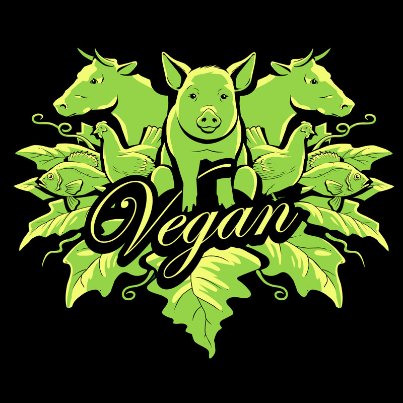

Cruelty-Free Breakfast
Instead of bacon and eggs, try this simple but filling Vegan breakfast alternative

Here are the ingredients:
- 1 package of vegan instant oatmeal
- 1 banana
- 2 tablespoons of peanut butter
- 1 teaspoon of cinammon
Follow these steps:
- Make vegan oatmeal according to instructions on package
- Slice banana into thin slices
- Mix banana in with oatmeal
- Mix peanut butter in with oatmeal
- Sprinkle cinnamon
- Stir until the oatmeal is an even consistency
- Enjoy!
Animal ethics, like computer code, is binary: either you are vegan or you are participating directly in and supporting the exploitation of animals.
:- Gary Francione
To learn more about animal ethics and about how to become Vegan, visit animal-ethics.org